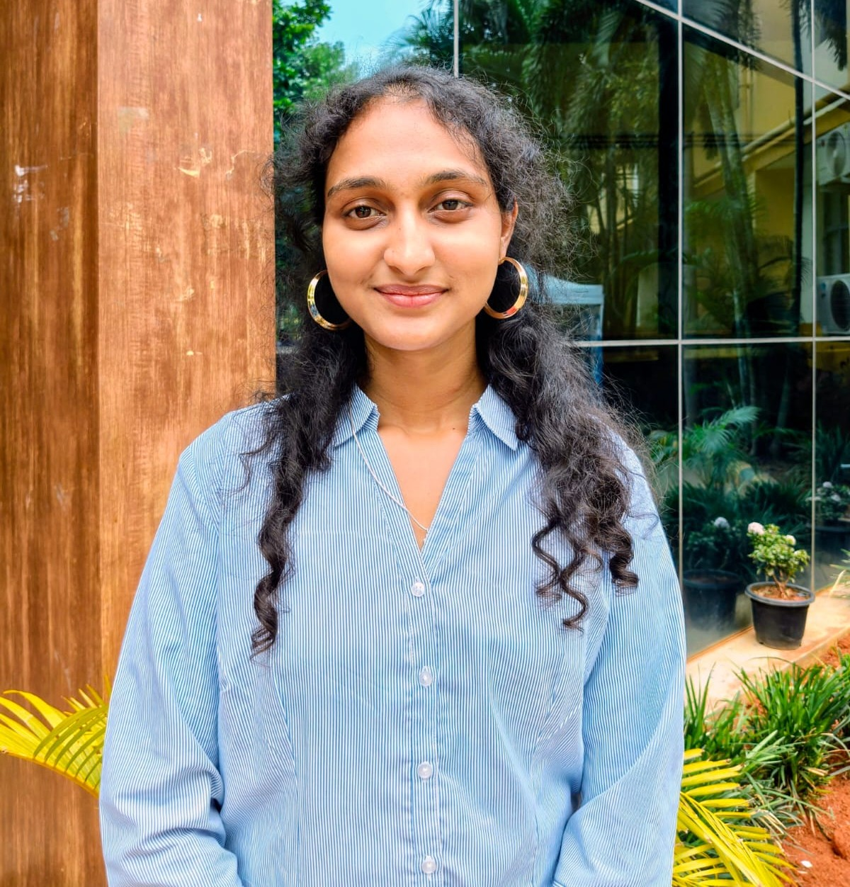

Bachelor of Engineering - Computer Science and Engineering
Sai Vidya Institute of Technology
Currently in 7th Semester
Computer Science Engineering Student | Aspiring Software Engineer

Hi! I'm Niharika M Kodige, a Computer Science and Engineering student currently pursuing my Bachelor of Engineering at Sai Vidya Institute of Technology. I am currently in my 7th semester and have a strong interest in software development, web technologies, and artificial intelligence.
I enjoy learning by building and experimenting with new technologies. I am particularly interested in web development, frontend development, AI and machine learning, and databases. I am currently learning Java Full Stack Development as I work towards becoming a software engineer.
Sai Vidya Institute of Technology
Currently in 7th Semester
I am currently learning Java Full Stack Development and strengthening my skills in software and web development.
I am currently working with a team on an influenza-like illness forecasting project focused on predicting illness trends for the following week.
As part of the project, I developed an LSTM-based forecasting model using Python and collaborated with my teammates on developing and completing two additional models. This experience has helped me strengthen my understanding of machine learning, time-series forecasting, and collaborative development.
Outside technology, I enjoy listening to music, particularly pop, R&B, and electronic music. I enjoy reading both fiction and non-fiction, and I occasionally spend my free time drawing and painting.
I have a strong interest in travelling and exploring new places, especially destinations surrounded by nature. I also enjoy photography and capturing aesthetic moments and landscapes along the way.
My immediate goal is to begin my career in a good organization where I can gain practical experience, learn from experienced professionals, and continue developing as a software engineer.
In the long term, I want to keep growing as a developer, explore new areas of technology, and work on projects that challenge me to learn and improve. Beyond my career, I hope to travel extensively and experience some of the world's most beautiful and unique places.
Feel free to connect with me through the links below: